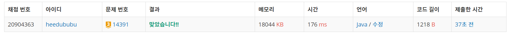

문제
https://www.acmicpc.net/problem/14391
( ᐛ )و 도전
1. 설계
- DFS를 이용하여 모든 경우를 다 해본다.
- visit한 곳은 가로로 숫자를 만들고, 아니라면 세로 숫자로 만든다.
- 모든 경우의 수 중 가장 큰 값을 리턴한다.
2. 구현 (성공 코드)
1
2
3
4
5
6
7
8
9
10
11
12
13
14
15
16
17
18
19
20
21
22
23
24
25
26
27
28
29
30
31
32
33
34
35
36
37
38
39
40
41
42
43
44
45
46
47
48
49
50
51
52
53
54
55
56
57
58
59
60
61
62
63
64
65
66
67
68
69
70
71
72
73
74
75
import java.util.Scanner;
/**
* @author HEESOO
*
*/
public class Main {
static int n,m;
static int[][] map;
static boolean[][] visit;
static int max=0;
public static void dfs(int x, int y) {
if(x>=n) {//탐색 끝
sum();
return;
}
if(y>=m) {//한 행 체크 끝났으므로 다음 행 이동
dfs(x+1, 0);
return;
}
visit[x][y]=true;//가로 숫자로 사용
dfs(x, y+1);
visit[x][y]=false;//세로 숫자로 사용
dfs(x,y+1);
}
public static void sum() {
int result=0, temp=0;
for(int i=0;i<n;i++) {//가로 숫자 계산
temp=0;
for(int j=0;j<m;j++) {
if(visit[i][j]) {
temp*=10;
temp+=map[i][j];
}
else {
result+=temp;
temp=0;
}
}
result+=temp;
}
for(int i=0;i<m;i++) {//세로 숫자 계산
temp=0;
for(int j=0;j<n;j++) {
if(!visit[j][i]) {
temp*=10;
temp+=map[j][i];
}
else {
result+=temp;
temp=0;
}
}
result+=temp;
}
max=Math.max(max, result);
}
public static void main(String[] args) {
// TODO Auto-generated method stub
Scanner scan=new Scanner(System.in);
n=scan.nextInt();
m=scan.nextInt();
map=new int[n][m];
visit=new boolean[n][m];
for(int i=0;i<n;i++) {
String str=scan.next();
for(int j=0;j<m;j++) {
map[i][j]=str.charAt(j)-'0';
}
}
dfs(0,0);
System.out.println(max);
}
}
3. 결과
 성공٩(˘◊˘)۶
4. 설명
- DFS를 이용한다
- n, m이 최대 4이므로 모든 경우를 다 확인해도 시간 초과가 발생하지 않는다.
- dfs에서 재귀로 모든 원소를 다 탐색한다.
- 한 행에서의 체크가 모두 끝났다면 다음 행으로 넘기고, 마지막 행까지 체크가 끝났다면 sum()을 호출하여 숫자 계산을 한다.
- visit[i][j]가 true라면 그 숫자는 가로 숫자로 사용한다는 뜻이고, false라면 세로로 사용한다는 뜻이다. 따라서 true와 false일 때 둘 다 dfs()를 불러 모든 경우를 확인해야 한다.
- 숫자를 계산한다
- 가로 숫자와 세로 숫자를 따로 계산해준다.
- 가로 숫자는 행을 기준으로 가로(true)인 곳을 찾아 누적한다.
- 이때 숫자의 자리수를 생각해야하므로, 이전까지의 합 temp에 *10하여 자리를 한 단계 올린 뒤, 현재 값을 더한다.
- 현재 숫자가 지금 계산하는 조건(가로/세로)이 아니라면, 여기서 이전까지의 숫자들이 끝나는 것이므로 result에 누적한 후, 다음 숫자를 위해 0으로 초기화한다.
- j탐색이 모두 끝나면 한 행이 끝난 것이므로 지금까지의 temp를 result에 저장한다. 어짜피 위의 else문에서 저장했다고 하더라도, temp=0으로 다시 초기화되었으므로 이 코드를 실행한들 0이 더해지므로 큰 상관이 없다.
- 세로는 열을 기준으로 체크하며, 기본적인 틀은 가로와 같다.
해결 완료!
참고
- [백준] 14391번 종이 조각 https://whereisusb.tistory.com/230